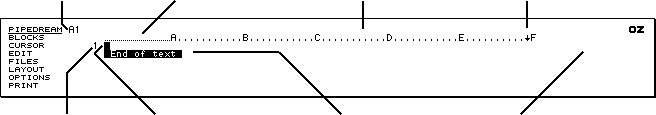

to move into the APPLICATIONS list, if necessary, and press
or
to move into the APPLICATIONS list, if necessary, and press
or
 until PipeDream is shown highlighted.
until PipeDream is shown highlighted.Before trying the sample applications using PipeDream, this section shows how to start PipeDream, and introduces the fundamental concepts necessary to an understanding of how to work with it.
First start PipeDream with a blank document from the Index. To do this:
to move into the APPLICATIONS list, if necessary, and press
or
until PipeDream is shown highlighted.You will see the PipeDream opening screen, confirming that you have selected the PipeDream application.

For clarity, the subsequent diagrams in this chapter show the central portion of the screen only.
The page display map gives you an. overall view of the current page of the document you are working on in PipeDream. Each character in the document is represented by a single dot in the map, enabling you to see the layout of the whole page and, if necessary, to adjust the layout to improve the appearance.
At any time the lines on the map corresponding to those displayed on the PipeDream screen are indicated by a vertical bar at the right-hand side of the map:
To make best use of PipeDream it is important to understand some basic principles of how PipeDream documents are constructed.
Every document is divided into rows or lines, numbered 1, 2, 3... etc, and one or more columns, labelled with letters A, B, C... etc. Initially the document has 6 columns, labelled A to F, each of which is 12 characters wide, but commands are available for you to alter the widths of individual columns or to alter the number of columns.
The part of a document lying in one row and one column is called a slot. A slot is referred to by its column label and its row number; for example, the following diagram shows slot D3 highlighted by the highlighting bar:
The coordinates of the slot containing the cursor are shown at the top left of the PipeDream screen, and the column containing the cursor is identified by closely- spaced dots on the top border.
The right-hand margin is indicated by the [Downicon] symbol on the top border, and normally all columns have their right-hand margins at the right-hand edge of the screen.
Much of the power and flexibility of PipeDream comes from the two different types of slot which you can create and combine within a single document: text slots and expression slots. Each type of slot can contain up to 240 characters.
Text slots are used for entering and editing continuous text, such as the body of a letter, a technical paper, or a novel.
When working with text, the columns in PipeDream behave as if they are on different layers, like separate overlapping sheets of paper. For example, the initial column format could be represented by the following diagram:
Text typed into column A behaves as if it is on the bottom layer, which is 72 characters wide; it will 'show through' the other layers, unless they contain text or expressions in the same row.
Text typed into column F behaves as if it is on the uppermost layer, which is only 12 characters wide.
When text is typed into a text slot it will automatically wrap around to the start of the next row in the same column when the cursor reaches the right-hand margin for that column (unless wrapping has specifically been turned off).
If justified text has been selected, from the Options Page, lines will be padded with spaces so that the right-hand margin is even. The layout of a document can be altered simply by moving the right-hand margin, and then reformatting the text paragraph by paragraph.
By giving each column a different right-hand margin, independent columns of text can be created within the same document. With a little practice you will find that PipeDream is capable of creating quite complex multi-column page layouts.
Expression slots, on the other hand, are used for creating tables of figures or information, often called spreadsheets. These can contain mathematical expressions, including references to other slots in the document, and scientific functions.
The main difference between expression slots and text slots is that once you have typed the expression into an expression slot, what is displayed in the document is not the expression itself, but the result of evaluating the expression. For example, if you typed 1.15 * 3 0 0 into an expression slot, the result 345 would be displayed in the document.
For spreadsheet work you can make all slots work as expression slots by default by setting the Options Page Text/Numbers setting to Numbers; see p. 136.
Text slots and expression slots can be mixed in the same document; so a letter could include a table of financial calculations automatically added together by PipeDream, or a company business plan could incorporate a spreadsheet within the descriptive text to show financial predictions.
Values from expression slots can be included within formatted text in text slots using '@-fields'. This is convenient if, for example, you want a letter to refer to the result of a particular calculation.
The concepts of rows and columns, text slots and expression slots, and formatting text, are illustrated by the following three practical examples in the use of PipeDream.
This chapter will explain how to:
This example shows how PipeDream can be used in a typical word-processing application. To enter PipeDream from the Index starting with a blank document, select PipeDream from the Index, and press the ENTER key.
Type the following:
You are invited to a beano.
Notice that the cursor moves to the right as you type. The next character you type will always be typed at the position indicated by the cursor.
A short time after you stop typing, you will see the page map, on the right-hand side of the screen, change to show the new layout of text on your page.
Press the DEL key at the top right-hand side of the keyboard, until the word beano disappears.
DEL backspaces the cursor over the text you have typed, removing it from the page.
Type the word party and then continue to type the paragraph shown below. If you make a mistake, use the DEL key to correct it.
When your typing reaches the right-hand margin, indicated by the symbol on the top border, just keep typing and PipeDream will automatically carry words over to the start of the next line.
You are invited to a party to celebrate the creation of my first document with the Cambridge Z88 computer. Champagne will be provided.
PipeDream starts in Insert mode, although you also have the option of working in another mode called Overtype mode. You can change modes with the Insert/Overtype command; see p. 115.
In Insert mode, text is always added at the position indicated by the cursor. You
can add text simply by moving the cursor to the point where you want the text added,
and then typing. The cursor is moved around on your document using the four arrow
keys,
,
,
,
at the bottom right-hand side of the keyboard.
Position the cursor after the word champagne, on the second line of the text you have just entered, press the space bar, and add the phrase:
and smoked salmon
The original text will move apart to make room for the new text, and words will wrap around to the next line at the right-hand margin to ensure that the altered text is correctly formatted.
After adding the new text press the ENTER key. ENTER moves the cursor to the beginning of the next line.
Press ENTER twice more to leave a blank line and move the cursor down to row 5 on the page. Type the following:
Sunday 28th February at 12 o'clock.
You can use the ENTER key to end paragraphs, insert blank lines, and separate items in a list.
The page you are working on is divided into six columns, each 12 characters wide, shown by the rows of dots and the letters A to F on the top border of the screen. These provide the equivalent to tab positions on a typewriter.
With the cursor still on row 5, press TAB exactly five times. The cursor will move to the left-hand edge of each column in turn until it reaches the left-hand side of the column labelled 'F'. Notice that as the cursor moves into each blank slot, text overlapping the slot is hidden. Now type in the text:
RSVP
The text will be positioned near the right-hand side of the sheet, opposite the text already on row 5.
You can move to the previous tab position by holding down the SHIFT key and pressing TAB Try doing this to move the cursor back into column A, at the left- hand side of the screen.
You can remove characters from the middle of a line by using the Delete Character command which you can give either using the EDIT menu, or by holding down the SHIFT key and pressing DEL.
Now you decide to change the day of the party to Saturday 28th February. Move the cursor across to the S of Sunday with the cursor keys. Then, hold down the SHIFT key and press DEL; the [S] will be deleted. Keep pressing SHIFT DEL until the word Sunday is removed. Then, type in the word Saturday to replace it.
Now add a heading to the invitation. To do this, you first need to insert two blank lines at the top of the page.
Move the cursor up to the first line of your document, row 1, by pressing
.
Now give the Insert Row command. You can do this either using the
EDIT menu, or by typing
 N.
A blank line will be added where the cursor was, and the remaining lines of the
document will be moved down on the page.
N.
A blank line will be added where the cursor was, and the remaining lines of the
document will be moved down on the page.
Type
N
again to give two blank lines at the top of the page. Then type in the following
text:
A Once-in-a-lifetime Party
The bottom line of your document will not be visible as it is off the bottom of
the screen. You can make it scroll into view by moving the cursor down with the
key. Move the cursor back to the top line with the
key before continuing with the example.
You can emphasise key phrases in your text by changing the style to bold, underlined or italics. This is achieved by selecting one of the highlight commands from the PRINT menu, or by typing one of the following highlight commands:
| Command | Effect | Highlight code |
|
PUPBPI |
for underlined text for bold text for italilc text |
1 2 4 |
Type the command once at the beginning of the text you want to emphasise, and give the same command at the end of the text you want to emphasise, to switch back to normal text.
To emphasise the heading of the invitation, move the cursor to the beginning of
the heading with the
key. Then type
PB.
A '2' symbol will be inserted before the text to indicate that a highlight code
2 has been inserted. Move to the end of the heading with the
key, and type
PB
again. Another '2' symbol will be inserted. Now move the cursor down to the next
line with the
key and the heading will be displayed bold on the screen.
When you move the cursor onto the line containing highlights, the codes are displayed as highlighted numbers 1 to 8 so that you can edit them, or delete them, just like any other text characters. When you move the cursor onto another line, the effect of each highlight is shown on the screen, just as it will appear when printed out. (Italic text is displayed as tiny characters.)
You can alter the layout of one or more lines of text in your document with one
of the Align commands on the LAYOUT menu. For
example, to centre a line of text, you move the cursor onto that line and then select
the Centre Align command from the LAYOUT menu.
Alternatively, you can type
LAC.
Move the cursor onto the line containing the heading of the party invitation, if
it is not there already, and type
LAC.
You will see the heading become centred on the page map (which always shows you
the format of the page as it will appear when printed). The actual line of text
will be centred on the document when you move the cursor onto the next line.
Once you have finished working on a document it is a good idea to save it as a file to the Cambridge Z88 RAM. You will then be able to find it again without difficulty at a later date, and there is the added advantage that documents saved to the filing system take up less space and are more secure than documents left within PipeDream.
You can save a copy of your document into the Cambridge Z88 filing system by selecting Save from the FILES menu:
The Save command optionally allows you to save only part of your document, and therefore prompts with the following questions:
Name of file to save
Save only range of columns No
Save selection of rows No
Save marked block No
Save plain text No
Type in the name Invitation as the name of the file to be saved, so that the top prompt becomes
Name of file to save Invitation
and press ENTER since on this occasion you do not need to select any of the other options.
A copy of the document will be saved with the name Invitation in the Cambridge Z88
filing system. You will see the file Invitation listed
if you select the Filer by typing
 F.
Press ESC to return to PipeDream.
F.
Press ESC to return to PipeDream.
If at some stage you expand the Cambridge Z88 with a RAM card, you can save a document to the extra RAM by referring to it in the file name as, for example:
:RAM.1/Invitation
Try loading back the document you have just saved using the PipeDream Load command.
First clear the invitation from PipeDream by giving the New command from the BLOCKS menu. If you have altered the document since you saved it, the prompt
Overwrite text?
will be displayed at the top of the display, to give you the chance to go back and save your changes. Press Y to clear the document.
Then select the Load command from the FILES menu. As in the case of the Save command, fill in the file name in the list of options
Name of file to load Invitation
and press ENTER to load the file. You should see the invitation exactly as you saved it.
If you have a printer connected to the Cambridge Z88, you can print out a copy of the invitation with the following procedure:
You can repeat the procedure to print as many copies as you want.
To get bold and underlined text to print correctly you may need to use the Printer Editor; see Section Nine - The Printer Editor, P. 181.
You have just seen how the Cambridge Z88 makes it a simple matter to write text, correct mistakes, alter the layout, and print a document.
The Cambridge Z88 also enables you to compile a catalogue of information, as demonstrated in the next worked example.
This example shows how you can enter any type of information such as a library catalogue, a book index or bibliography, or a name and address list into the Cambridge Z88 using PipeDream.
You will learn how to:
Because you are going to enter lists of information, rather than a block of text for formatting into a document, you should first alter the Wrap option on the Options Page so that words do not wrap around onto the next line when they reach the right-hand margin.
Select the Options Page by typing
O.
You will see a display showing the different options you can select for your document,
and information about the document.
Move the cursor down to the wrap option by pressing until the cursor is opposite the word Wrap. Then type N to change the option value from Y (Yes) to N (No) to stop wrapping altogether:
Finally press the ESC key to return to the document.
Before entering information into PipeDream, it is good practice to set up headings to specify how the information will be arranged. Since you are going to create a name and address list, the headings will simply correspond to the name and address, with one reserved for additional information.
When you start a new sheet in PipeDream you are given six columns, each 12 characters wide. Although you can enter lines of text much wider than this in each column, it will make working with the name and address information simpler if, at this point, you make each of the columns in the document wider. You do this with the Width command in the LAYOUT menu.
Press the MENU key until the LAYOUT menu is displayed. The Width command may already be highlighted as it is the first item on the menu; otherwise use the cursor keys to highlight it. Then press ENTER to select it. In reply to the prompt
New width
type
24
and press ENTER to carry out the change. (You can ignore the other prompt - Specify column.)
The width of the column containing the cursor, column A, will increase to 24 characters.
Now move the cursor into column B by pressing the TAB key,
and repeat the procedure to set the width of column B to 24 also. You can, if you
wish, select the Width command directly without going through the LAYOUT
menu, by typing
W.
Continue until you have set each of the columns A to F to a width of 24 characters. Notice that when you press the TAB key to get from column C to column D, the document moves to the left on the screen so that columns D and E come into view without the cursor position changing.
Then move the cursor back to the left-hand side of column A by typing
TAB.
Type the following headings, pressing the TAB key between each heading to move the cursor to the beginning of the next column.
Name TAB
AddressTAB
Town TAB
County TAB
Postcode TAB
Info
Notice that when you type the word Town and press the TAB key, the document scrolls to the left so that the column headed 'D' comes clearly into view:
So, although you can only see three of the six columns in your document at any one time, it is a simple matter to move about and find the information you want.
Although it should be quite obvious what you will be using each of the first five headings for, you may be wondering what the purpose of the last heading Info might be. You can use this to record additional information about all of the people in your address list, such as whether you sent them a Christmas card last year, when their birthday is, or any other information you would like to be able to recall. In the following examples the field will contain the person's age.
Move the cursor back to the left-hand side of column A by typing
TAB. Press the ENTER key to move
the cursor to row 2.
You can now type the first name into slot A2.
Bell , A
Press the TAB key when you have finished typing the name to move the cursor across to the address column, column B. Type in the address, remembering to press the TAB key between each item:
Bell , A TAB
2 Ringway TAB
TringTAB
HertsTAB
TE1 2LM TAB
24
Enter the other names and addresses given below on lines 3, 4, 5, and 6 of your document in exactly the same way. Of course, if you prefer, you can compile your own list. If part of an address is too long to fit within one column, just keep typing; although you will not be able to see all the information in that column, it will be retained and you will be able to refer to it later.
Also, be sure to keep to the headings at the top of the document. For example, if a particular address does not have anything corresponding to a county, leave that column blank so that you put the postcode under the correct heading. This will enable you to search for a particular postcode, as described later.
Complete the table as follows:
Name Address Town
County Postcode Info
Bell, A 2 Ringway Tring
Herts TE1 2LM 24
Long, C 9 Knott Close Farnham Surrey WAY
2G0 27
Rover, A 4 Chase Mews Kenilworth Warw. K9
WUF 12
Bird, J 27 Wood Lane Bath Avon
CB1 L23 14
Hill, Max 10Upper Street Steep Hants UP
21T 43
Since by now you may have spent some time entering information into your document, it is a good idea to save a copy to the Cambridge Z88 filing system in case you accidentally lose the information during the next experiments. You save a copy of the document by using the same procedure as the one used for the party invitation.
Select the Save command by pressing the MENU key until the FILES menu is displayed. Press the key to highlight Save. Then press ENTER to give the Save command.Type addresses as the name of file to save, ignoring the other options since you want to save the whole document, and press ENTER. A copy of the document will now be saved to the filing system.
Now that you have entered a table of names and addresses, it would be useful to have them sorted into alphabetical order so that you can look up a particular name more easily.
First you need to specify which part of your document you want to sort. Move the
cursor to slot A2, the top left-hand comer of the table of names and addresses,
using the
and
keys to move up and down the document and the TAB and SHIFT TAB commands to move across
the document between columns to the left and right.
Mark slot A2 by giving the Mark Block command from the BLOCKS
menu, or by typing
Z.
When you give the command, slot A2 will be highlighted on the screen to indicate that it has been marked:
Now mark the bottom right-hand corner of the table of names and addresses. Move the cursor down to row 6 and across to column F with the key and the TAB command. Then give the Mark Block command again. When you have completed the second Mark Block command, the entire table of names and addresses will be selected and shown highlighted on the screen.

The highlighted table of slots is referred to as a 'block', and several commands are available which will operate on an entire block of slots that you have selected.
Move back to the left-hand side of the sheet with
TAB .
To sort the block of slots, use the Sort command from the BLOCKS menu. Press the MENU key until the BLOCKS menu is displayed. Then press the key until the Sort command is highlighted on the menu, and press ENTER to select the command.
We wish to sort the names and addresses into alphabetical order of the names, which are in column A, so type A to the prompt
Sort on column A
and press the ENTER key to perform the sort. (You can ignore the other prompts for the moment.)
You will see that the names and addresses have been correctly sorted within the
table. You can clear the marked block by giving the Clear Mark
command from the BLOCKS menu, or by pressing
Q:

You could, of course, have sorted the information on a different heading by specifying another column, rather than column A, when you gave the Sort command. For example, you may like to experiment with sorting the same names and addresses on the Town column, or on the column containing the peoples' ages.
You could have entered many more names and addresses than the few you have already stored without running out of space in the document.
You can see how much space is available in a document at any time by typing
O
to display the Options Page. The number of characters of space available is given
after the heading Free on the right-hand side of the
Options Page display. Press ESC return to your document.
In a large list of names and addresses, it would be very inconvenient to have to search around in the list for a particular name or address. Fortunately, there is a much faster way, using the automatic search facility built into PipeDream.
Select the Search command from the BLOCKS menu in the usual way: display the BLOCKS menu with the MENU key, and use the cursor keys to highlight Search; then press ENTER to give the Search command.
The Search command displays a number of options which allow you to specify exactly what you want to search for, and whether you want to restrict the search to a particular part of your table of information.
For example, you might want to search for the address of someone whose surname you had forgotten, but whose Christian name you knew to be Max. You would then enter Max against the first option:
String to search for Max
Press to move to the next option which initially shows:
Search only range of columns No
and press Y to alter the option value to Yes, and type A, to specify that you want to search only column A, which contains the names. The option will now read:
Search only range of columns Yes A
Then press ENTER to begin the search. The cursor will instantly find the name Hill, Max, allowing you to read off his address.
Incidentally, if the name you chose to search for found someone else with the same name first, you could use the Next Match command on the BLOCKS Menu to move on and find the next item that contained the same name.
It is a peculiarity of the way we remember information that we can often only remember part of what we are trying to recall. For example, we may know that the person we are trying to find lives in a town called something like Caxton — or perhaps it was Croxton? Or then again, perhaps it was Foxton. The PipeDream Search command has two facilities which help in just this type of situation.
You can type the symbols ^# in the string you are looking for, to represent any combination of letters (including none). Thus, you simply have to specify
String to search for ^#xton
to find any of the towns, Caxton, Croxton or Foxton, or any other town ending in 'xton'.
You can also specify the symbols ^? which will match any single letter or character in the string you are searching for. So, if you could only remember that the name of a road had three letters, you could search for
^?^?^? Road
and you would be sure to find it.
To print out the information in your name and address list as an orderly table, select the Print option from the PRINT menu. Press the MENU key until the PRINT menu is displayed. Select Print using the cursor keys, and then press ENTER to give the command.
Since the total width of the table of names and addresses is 144 characters (six columns of 24 characters) it will probably be too wide to fit across the width of the paper on your printer; most printers will only print 80 characters. You will therefore need to print the table in two sections, by selecting a range of columns in each case.
The first time you give the Print command, alter the option
Print only range of Columns No
to Yes by typing Y, followed by A C so that the option reads
Print only range of columns Yes A C
Then press the ENTER key to start printing. Once this is finished, give the Print command again, this time specifying the option as
Print only range of columns Yes D F
Alternatively, some printers will print up to 132 characters across; in this case you may be able to fit the whole table onto a single sheet of paper by first reducing the width of some of the columns using the Width command on the LAYOUT menu.
If you were going to use the name and address list for a business mail shot, you might want to compile a selective list containing only the names and addresses of people living in one particular area. The PipeDream Print command caters for this by allowing you to specify a test to be performed on each row of the document. Only those rows for which the test succeeds will be printed.
You specify the test in terms of slots in row 1; PipeDream automatically alters the slot coordinates to refer to the appropriate row as testing proceeds through the document.
For example, to print out the names and addresses of all the people living in Hants or Surrey, give the Print command in the usual way by displaying the PRINT menu and then pressing ENTER to give the Print command. Then move the cursor to the option
Select rows to print No
Change the option value to Yes, by typing Y, and type in the selection expression
D1="Hants" | Dl="Surrey"
The '|' symbol means 'OR', so the whole expression means: "If the item in slot D1 is Hants or the item in slot D1 is Surrey...". In row 2 the test will apply to D2, and so on.
The selection expression can be virtually as complicated as you need, and can include tests on several different columns. For example, for a mail shot of information on a new wonder hair tonic you might want to select all men over 30 on the name and address list. The expression might be
Dl="London" & G1="M" & F1>=30
where G1 was an extra column containing M or F to indicate the sex. The '&' symbol means 'AND' and can be used to link several tests together.
The next worked example shows how to use the Cambridge Z88 to perform numerical calculations. It shows how you would analyse your monthly expenses, and discover what proportion of your income you were spending on each.
You will learn how to:
You are going to create a table which shows for each of the months January to May what your expenditure has been on your mortgage, food, car, gas and electricity, and telephone.
At first sight it might appear that an awful lot of typing would be involved in setting up such a table. However, as you will see, all the repetition is carried out automatically for you by PipeDream and very little typing is actually needed.
To set up the table of expenses you will need to be familiar with the procedure for moving the cursor between slots (or columns) in the document. Remember that you will need to use the following keys:
to move up a line
to move down a line
SHIFT TAB to move to the previous
slot to the left
TAB to move to the next slot to the right
TAB to move to the leftmost slot
Also, when you are at the left-hand edge of- a slot, pressing
will move to the previous slot to the left, if there is one.
When you are working with a document you can use the First Column, Last Column, Top of Column, or Bottom of Column commands on the CURSOR menu to move to the four edges of the document in a single operation.
You are now going to set up the column and row labels for the table of expenses.
Move the cursor to slot B1 and type the label Jan (for January). Likewise type Feb, March, and April in slots C1 to E1 to complete the column headings for the table. Later you could extend the table for a whole year's figures.
Now type the row labels for the different expense categories, as follows:
In slot: Enter:
A2 Rates
A3 Mortgage
A4 Food
A5 Car
A6 Gas/Elect
The table headings are now complete. Move the cursor back up to slot B2, and the table should appear as shown on the following screen:

The rates in the example are going to be £500 per half-year. This is going to be divided evenly over each month's expenses, but you do not need to divide 500 by 6; PipeDream will do it for you. You only have to enter the expression 500/6 into slot B2 (the '/' sign means divide).
However, you first need to specify that this slot is to be an expression slot, so
that whatever you type into it will be evaluated, and so that other slots on the
table can refer to the result. To do this you give the Edit Expression
command from the EDIT menu; alternatively you may find it more
convenient to type
X
which has the same effect.
The slot B2 will be highlighted on the screen to show that you are editing an expression slot, and the cursor will move to the centre of the top line of the screen so that you can enter an expression. Type the expression
500/6
and press the ENTER key to enter it into slot B2. The number 83.33 will be displayed right-aligned in slot B2.
You do not need to type the rates expression into the other slots in row 2; you can simply indicate that you want the same value as slot B2 by typing the coordinates of that slot.
Move to slot C2 and press
X
to enter an expression. Then type
B2
and press ENTER. The value 83.33 will appear in slot C2. Likewise enter the expression B2 into slots D2 and E2.
Effectively you have specified that you always want slots C2 to E2 to contain the
same value as slot B2. So, for example, suppose you were granted a rates reduction
to £400 per half-year. Move the cursor back to slot B2 and type
X
to display the slot's previous contents, 500/6. Delete them, by typing
D
and then type the new value:
400/6 ENTER
Not only will the value in B2 change to 66.67, but slots C2 to E2 will also change, since they refer to this value.
Next you are going to enter the figure 200 for the four months' mortgage payments.
Type 200 into slot B3. If you forgot to type
X
when entering the figure, the number will appear left-aligned just as you entered
it. In this case, move the cursor back to the slot and press
X
and then ENTER afterwards.
You do not need to type the same value in slots C3 to E3; the Replicate command will do it automatically.
Select the Replicate command from the BLOCKS menu, and press ENTER to execute it. Answer the prompts as follows, pressing to move to the next line after entering B3:
Range to copy from B3
Range to copy to C3 E3
This says that you are going to replicate the value in slot B3 to the range of slots C3 to E3. Press ENTER to give the command, and the figure 200.00 should appear across the entire row so that the table appears as shown:
Note that until you press the ENTER key you can alter the
values you have typed for the ranges, moving between the two prompts with
and
.
The expenses in the other categories will tend to vary each month. You can either type in the figures used in the example shown below, or use figures from your own experience. In either case complete the table, remembering to make each slot into an expression slot before you enter the figure, or if you forget, afterwards.
You are now going to produce monthly totals for the expenses. Enter the label TOTAL into slot A7, and press TAB to move the cursor to slot B7.
Now press
X,
and enter the following expression:
sum(B2 B6)
Press the ENTER key, and PipeDream will perform the calculation and instantly display the sum of the figures in the range of slots B2 to B6; ie all the expenses for January.
The function sum(B2 B6) is a convenient way of writing the equivalent expression
B2+B3+B4+B5+B6
where the slots to be added are all in a row, column, or rectangular table.
Just as you replicated the value 200.00 above, you can also replicate an expression across a range of slots. Where the expression contains references to other slots, as in this example sum(B2 B6), the references will automatically be altered to reflect the change in position.
Replicate the expression you have just entered for slot B7 to slots C7 to E7 as follows. Select the Replicate command from the BLOCKS menu, and give the options as:
Range to copy from B7
Range to copy to C7 E7
Press ENTER and totals will appear for each column. The Replicate command has automatically altered the range B2B6 to give the appropriate totals in columns C to E.
If you now move the cursor to slot C7 you will see the expression in that slot displayed at the top left-hand side of the screen:
sum(C2C6)
Note that PipeDream removes unnecessary spaces when storing an expression.
As a final illustration of the power of PipeDream in analysing figures, you are going to calculate the percentage expenditure represented by each of the categories in the table.
First type the label
Percentage
in slot Fl.
Next find the total expenditure for the four months in the table. Move to slot F7,
press
X,
and enter the expression
sum(B7 E7)
Instead of typing the references B7 and E7, you can 'point to' each slot by moving
the highlighted slot with the keys TAB, SHIFT
TAB,
, and
,
and then give the Insert Reference command,
K,
to enter the corresponding references, B7 and then E7, into the editing line.
Now move to F2 and enter the following expression (which will be explained in a moment):
sum(B2 E2)/$F$7 * 100
Press ENTER to enter the expression.
This expression is built up as follows:
sum(B2 E2) is the total spent on rates for the four months.
F7 is the overall total expenditure for the four months. The $ signs 'freeze' the reference so that when the expression is replicated, the reference to F7 will remain the same.
sum(B2 E2)/$F$7 is thus the proportion of the overall expenditure spent on rates.
sum(B2 E2)/$F$7 * 100 expresses this proportion as a percentage.
Now replicate this expression down the remaining slots in column F by giving the Replicate command from the BLOCKS menu, and entering the options as
Range to copy from F2
Range to copy to F3 F6
The appropriate percentages will be displayed against each category.
When you first start using PipeDream, the results of all expression slots are displayed with two decimal places, the most useful format for working with financial calculations (although values are stored internally with full accuracy).
You can alter the display format for all expression slots in your document by changing the Decimal Places option on the Options Page menu, or for individual slots with the Decimal Places command on the LAYOUT menu.
For example, the table would look tidier if the percentages were displayed with no decimal places. First, mark the block of slots containing the percentages with the following procedure:
Z
as shown on the list of key functions above the keyboard.The block containing slots F2 to F6 will now be highlighted.
Now select the Decimal Places command from the LAYOUT menu. Reply to the prompts as follows:
Number of decimal places 0
Floating format No
Press ENTER and the numbers will be displayed with no decimal places.
You can also specify that certain characters, given on the Options Page, should be displayed before or after certain numbers in the document. By default, the trailing characters are set to '%', and the leading characters are set to '£'.
To display a '%' sign after the numbers in the marked block, give the Trailing Characters command from the LAYOUT menu.
You can also display a '£' sign before each value in the table. Mark the block of
slots from B2 to E7 by moving the cursor to each of these slots in turn and typing
Z.
Then give the Leading Characters command from the LAYOUT menu.
Finally, the column labels can be right-aligned. Mark slots B1 to F1 with the
Mark Block command,
Z,
and give the Right Align command from the LAYOUT
menu.
Press
Q
to clear the marked area, and the table will now appear as shown:
These three examples have demonstrated how PipeDream can help you to write letters and design text documents (word processing), set up lists of information, sort them, retrieve the items you need (databases), and set up and perform calculations on tables of numerical or financial information (spreadsheets).
For simplicity, each example focussed on one aspect of PipeDream's capabilities. However, the real power of PipeDream comes in its ability to mix all three different functions in a single document. For example, the expense account could be incorporated into a letter to your bank manager, the name and address list could include financial information and calculations, or the party invitation could be automatically addressed to everyone on your name and address list.
You are now in a position to start using PipeDream for your own applications, but to get the most out of its facilities you will probably want to read through the list of commands given in Section Five. You will then be able to refer back to it when your requirements of PipeDream become more advanced.